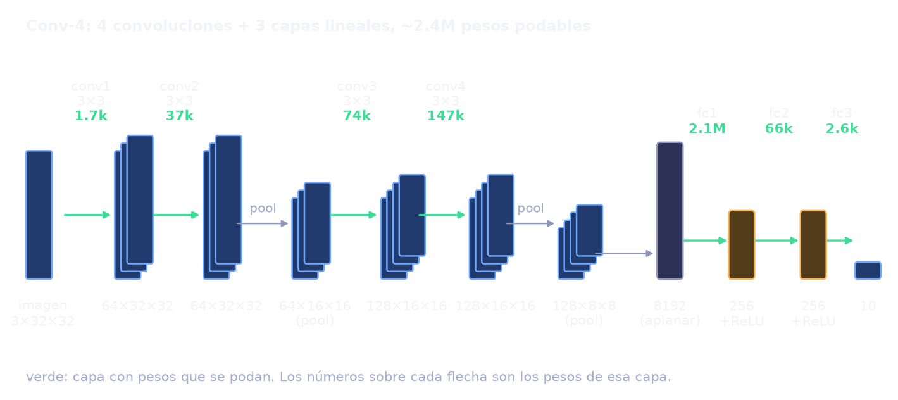
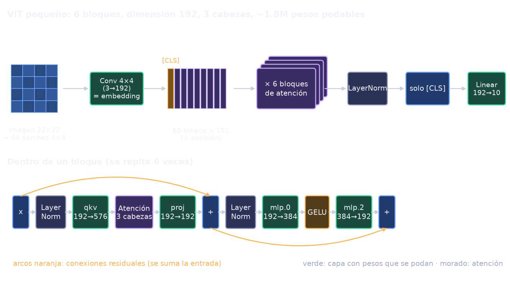
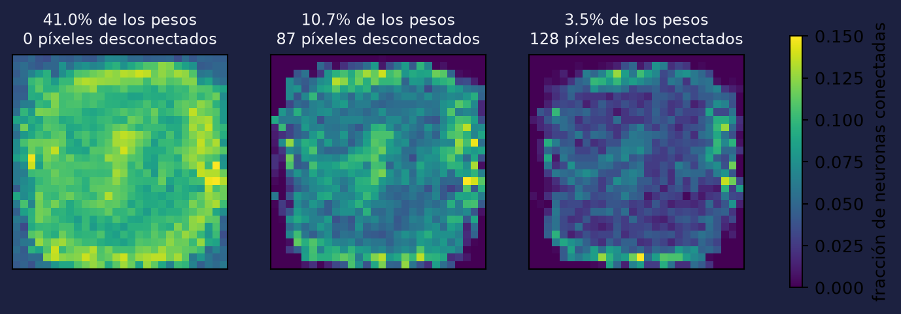
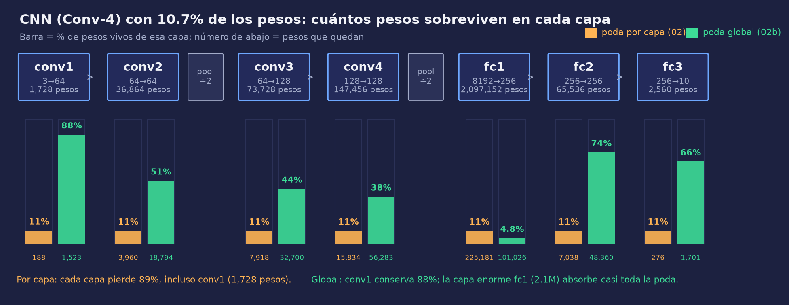
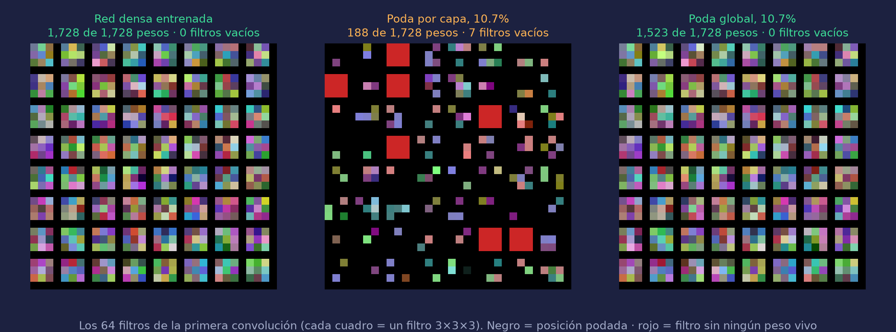
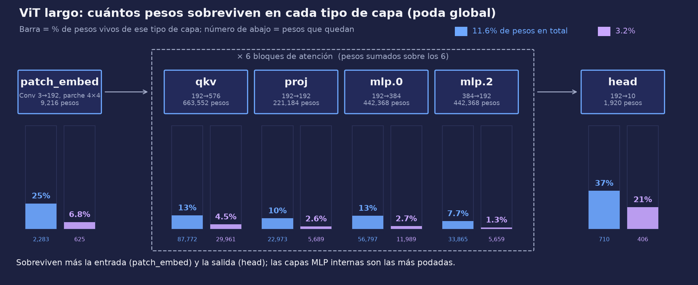
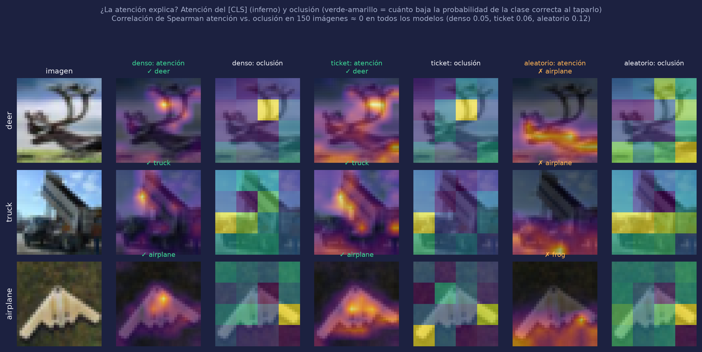

MLP, CNN, ResNet y ViT: dónde existe el boleto ganador, qué cambia con la complejidad, y por qué importa podar por capa o globalmente
José Antonio Mérida Castejón
2 de noviembre de 2026
Cada línea es un peso.
Quedan los pesos de mayor |w|: ~10%.
Entrenada desde los mismos valores iniciales, esa subred aprende casi igual que la red completa: un boleto ganador.
Control: la misma estructura con pesos nuevos. Si rinde peor, importan los valores, no solo la forma.
El problema: en redes grandes, regresar a θ₀ deja de bastar con lr alto y hay que hacer rewind a θₖ [2]. ¿Qué cambia al subir la complejidad (MLP → CNN → ResNet → ViT), y qué decisiones de la poda cambian el resultado?
En cada arquitectura hay una subred pequeña que iguala a la densa y le gana a la misma máscara con pesos nuevos.
prueba directaMientras más compleja la red, más tarde en el entrenamiento aparece el ticket: hay que hacer rewind.
prueba parcial1-2 puntos de rewind por arquitectura; sin barrido de k.
El warmup estabiliza el arranque, así que una red con warmup necesitaría menos rewind.
solo observacionalEl warmup nunca se varió: está confundido con optimizador y datos.
a) En la CNN, global > por capa porque no vacía las capas pequeñas.
b) Las redes grandes necesitan poda global.
Objetivo adicional. Mirar dentro de la red, no solo la accuracy: qué capas y qué pesos sobreviven (máscaras) y si la atención explica algo, en la CNN y en el ViT.
Enfoque. El ViT es donde más profundizamos (dos corridas e inspección completa); la CNN, donde se comparó poda por capa y global. El MLP y la ResNet son puntos de referencia.

| Optimizador | Adam 3e-4 |
| Entrenamiento | 30 épocas × 10 rondas |
| Poda | por capa (02) o global (02b) |
| Rewind | – |
| Qué prueba | H0 · H3a: solo cambia la poda |
86% de los pesos están en la primera capa lineal; la primera convolución tiene solo 1,728.

| Optimizador | AdamW 1e-3 |
| 04 · corto | 20 ép. × 8 rondas · warmup 2 · rewind ép. 2 |
| 05 · largo | 100 ép. × 8 rondas · warmup 5 · rewind ép. 5 · aumento fuerte |
| Poda | global (35% por ronda) |
| Qué prueba | H0, H1, H2 + inspección |
Cada parche es un token; el [CLS] "mira" a los 64 parches (de ahí los mapas 8×8). 05 repite 04 porque su baseline (78.9%) parecía subentrenado.
Un mismo código de poda (lth.py) para las cuatro redes; el MLP (LeNet-300-100) y la ResNet-20 son puntos de referencia y sus diagramas están en el informe. Una semilla por experimento; 02b repite 02 cambiando solo el alcance de la poda.
lth.py son míos; la IA hizo checkpoints, gran parte de los experimentos y las figurasnn.Module) y los loops de entrenamiento / evaluaciónlth.py: máscaras, IMP, rewinding, control aleatoriomarimo: notebooks reactivos guardados como .py, exportables a HTML.
uv: entornos reproducibles (uv.lock).
Claude Code: asistente en la terminal que lee el repo, edita y corre comandos con permiso.
lth.py.lth.py al resto de los cuadernos, corrió los experimentos y agregó checkpoints y figuras.Dónde falló: agregó complejidad que no pedí, sacó la poda de lth.py, volvió a poner print que había quitado y presentó la atención como explicación. Cada número del informe sale de results/*.json o de los checkpoints; el historial está en §5.2.

MLP, qué sobrevive: cada cuadro es la imagen de entrada de 28×28; oscuro = píxel casi sin conexiones. Con 3.5% de los pesos, los 128 píxeles del borde (siempre 0 en MNIST) quedan totalmente desconectados.
Densas: 97.7 · 73.0 / 74.0 · 90.9 · 78.9 · 86.0%. Ticket > control por 5-9 puntos (el ruido es ±0.6). ResNet: desde θ₀ = control (86.3 vs 86.5%); con rewinding, 89.6%.


Filtro vacío: un detector (de bordes, colores) sin ningún peso vivo; su salida es constante, así que ese detector murió. Por capa: 7 de 64, y 102 de 256 neuronas de fc2 ya no llegan a la salida. Global: 0.
¿Por qué? La mediana de |w| es 0.105 en conv1 y 0.0086 en fc1 (12× menos): un umbral global tira primero los pesos diminutos de fc1 y casi no toca a conv1. La poda por capa les exige perder lo mismo.
¿Y las redes grandes? Consistente, no probado: ResNet y ViT nunca se podaron por capa.
| Rewind | ¿Hizo falta? | Evidencia | |
|---|---|---|---|
| MLP | – | no | θ₀ iguala a la densa hasta 3.5% |
| CNN | – | no | ídem (poda global) |
| ResNet | época 1 | sí | desde θ₀ = control (86.3 vs 86.5%); con rewind 89.6% |
| ViT 20 ép. | época 2 | no | rewind ≈ ticket (−0.7 pts) |
| ViT 100 ép. | época 5 | solo a poca densidad | +3.4 pts a 7.5%, +3.3 a 4.9%, +1.2 a 3.2% |
MLP y CNN no necesitan rewind y la ResNet sí, pero el ViT, la más compleja, no lo necesita con densidades medias: la relación no es monótona. Solo hay uno o dos puntos de rewind por arquitectura.
La ResNet (sin warmup) necesita rewind y el ViT (con warmup) casi no, igual que en [1, 2]. Pero difieren también en optimizador, normalización y datos. Prueba directa pendiente: ResNet con warmup y ViT sin él.
El ViT largo parte de un baseline mejor (78.9% → 86.0%) y su ticket sigue por encima de la red densa hasta ~12% de los pesos, así que el resultado de 04 no era solo un baseline débil.


Capas. Con 3.2% de los pesos, head conserva 21% y patch_embed 7%, y mlp.2 solo 1.3%.
Significa: la poda quita primero lo redundante (las capas MLP internas); la entrada y la salida son pequeñas y cada peso pesa más. Mismo patrón que la CNN; es una hipótesis.
Atención vs. oclusión. Los mapas del denso, ticket y rewinding se parecen entre sí (0.63–0.73) y los del aleatorio no (0.17–0.28), pero al tapar parches la correlación con la atención es ≈ 0 (0.05 denso, 0.06 ticket, 0.12 aleatorio; 150 imágenes).
Significa: la atención no dice qué usa el modelo; los mapas son descripción, no explicación. No se concluye por qué falla el control. (Imágenes de la figura elegidas.)
Clases. El ticket queda dentro del ruido (±2.5) en casi todas; el aleatorio pierde en todas (hasta −14.6, pájaro).
Significa: la estructura sola no basta; los valores iniciales cargan información.
| Hipótesis | Veredicto | Base |
|---|---|---|
| H0 existencia | apoyada | ticket ≥ denso y > control en las 4 arquitecturas (ResNet: con rewind) |
| H1 complejidad → rewind | parcial | ResNet sí; MLP y CNN no; ViT solo a poca densidad; sin barrido de k |
| H2 warmup ≈ rewind | compatible, no probada | patrón ResNet vs. ViT, confundido con optimizador y datos |
| H3a global > por capa (CNN) | apoyada | 53.0% → 75.7%; sin filtros vacíos; pesos de capas pequeñas 12× mayores |
| H3b redes grandes → global | consistente, no probada | ResNet y ViT nunca se podaron por capa |
Una semilla por experimento; ~10,000 imágenes de prueba (diferencias ≤ 1 punto son ruido); sin barrido de k; warmup sin variar; sin transferencia entre datasets.
ResNet con warmup y ViT sin warmup (H2); ViT y ResNet con poda por capa (H3b); barrido de k con varias semillas y McNemar.
Referencias. [1] Frankle & Carbin, The Lottery Ticket Hypothesis, ICLR 2019. [2] Frankle et al., Stabilizing the LTH, 2019. [3] Renda et al., Rewinding and Fine-tuning, ICLR 2020. [4] Touvron et al., DeiT, ICML 2021. [5] Shen et al., Data Level LTH for ViTs, IJCAI 2023. Repositorio: github.com/TonitoMC/lottery-ticket-hypothesis Video: ENLACE_YOUTUBE